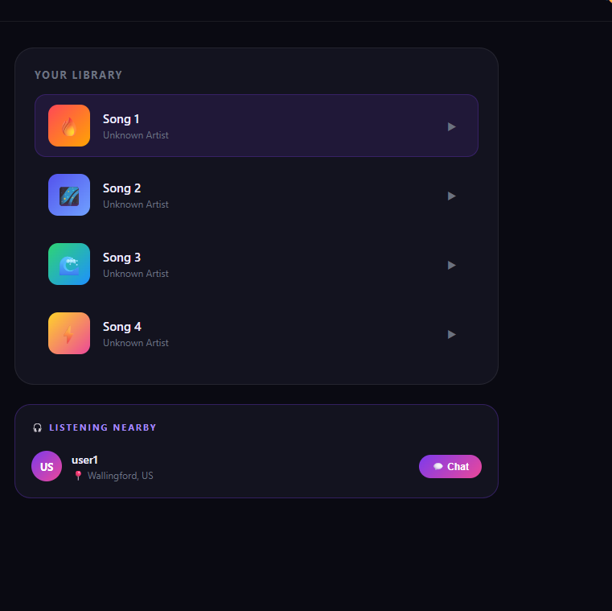
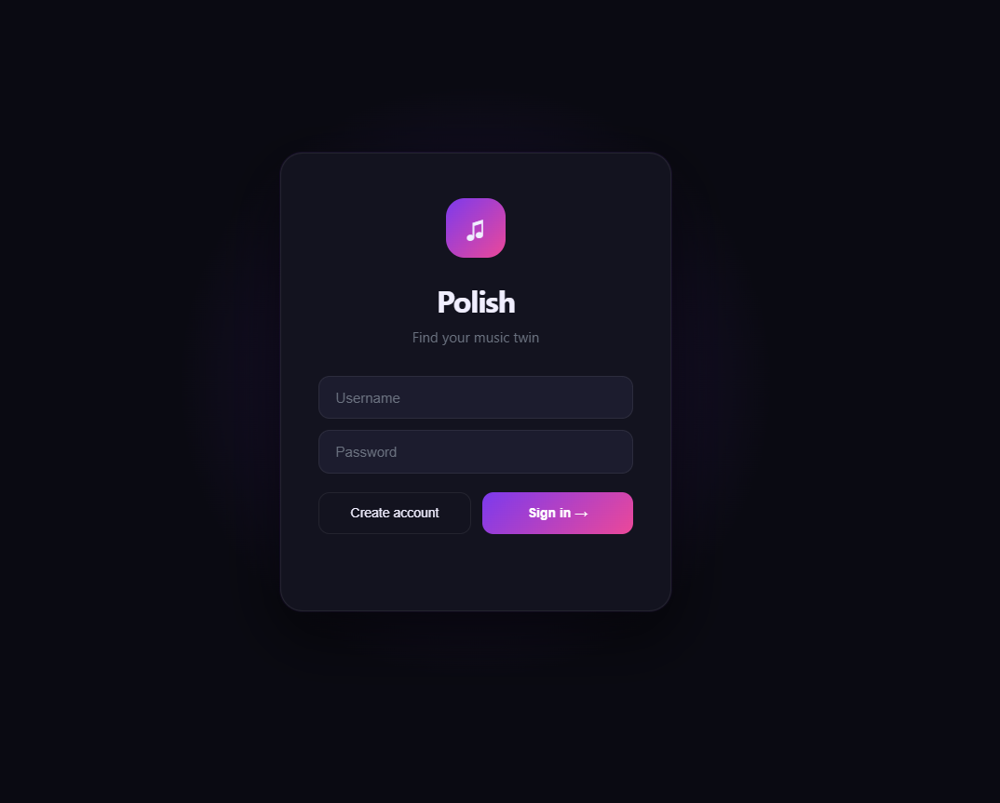
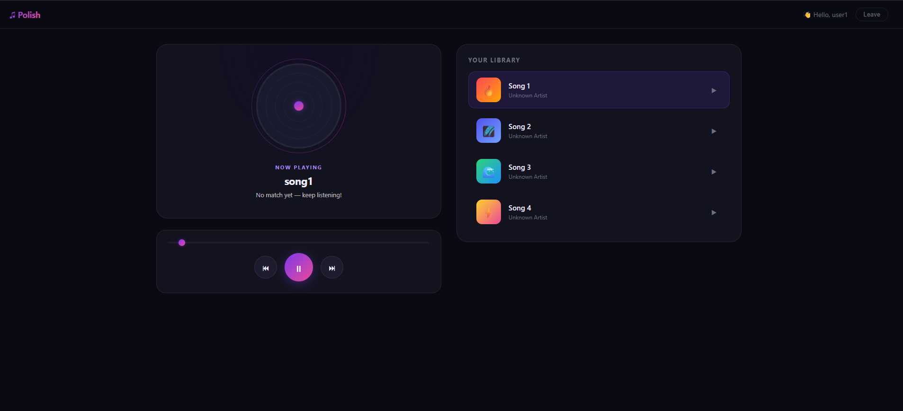

Role
Full Stack Developer
Project date
June 2025
Stack
Python, FastAPI, React, PostgreSQL, WebSocket, JWT
Music is one of the most powerful ways humans connect: but today we listen alone. Millions of people play the same song at the same moment, in the same city, without ever knowing each other exists. Existing music apps like Spotify have social features, but none tell you "this stranger 2km away is listening to exactly what you're listening to, right now."
The question was: Can we build a system that detects this real-time musical overlap and creates a moment of connection?
Shared
Listening, at the same moment
Separate
Listening without connection
Now
Polish changes that
Polish is a full-stack web application that:

The app is live on Render. To experience the music-matching feature, open it in two different browser tabs (or share the link with a friend) and log in with different accounts: then both play the same song to see the match happen in real time.
Create accounts
Click Create account: just pick any username + password. No email needed. Do this in Tab A and Tab B with different usernames.
Play the same song
In both tabs, click the same song from Your Library. The app detects the overlap and shows a match notification.

Backend
Frontend
Infrastructure & APIs
Every 3 seconds, the app logs the user's current song + GPS coordinates to the backend. The server checks for other active users playing the same song in the last 30 seconds. If found, a "Listening Nearby" panel appears instantly: no page refresh needed.
Users sign up and log in with bcrypt-hashed passwords. The server issues a JWT token on login. Every protected API call sends this token in the request header: no sessions, no cookies.
When two users match, they can open a direct chat panel. Chat history is stored in PostgreSQL and loaded via REST. Typing indicators (animated bouncing dots) and live text preview are powered by WebSocket: the other person sees your text appearing character by character before you hit send.
The browser's native Geolocation API sends real coordinates. These are reverse-geocoded using the Nominatim API to show human-readable city names. If GPS is unavailable, the app defaults to 0,0 and matching still works by song name alone.
Built the real-time music matching platform with React on the frontend and Python and FastAPI services behind it.
These notes cover earlier implementation and debugging work. The current project uses React and PostgreSQL.
Old users remained "active" in the database even after closing the browser, polluting match results with stale data that never expired.
Added a last_active timestamp to every log request. The match query now filters to only users active in the last 30 seconds. Any user who closes the app disappears automatically within 30 seconds.
After a UI redesign, the entire app section was invisible after login. Hours of CSS debugging found absolutely nothing wrong.
A single typo: </auth-section> instead of </div>: caused the browser to nest the entire app inside the auth section. Fixed with one character change.
New messages occasionally appeared before older ones because the DOM was being fully cleared and rebuilt on every poll cycle.
Tracked the previous message count and only applied the slide-in animation to genuinely new messages. Preserved scroll position if the user had scrolled up to read history.
The initial architecture used pure HTTP polling for everything: slow and inefficient for typing indicators which needed sub-second latency.
Kept REST for persistent messages (stored in DB) and added a WebSocket layer exclusively for ephemeral events like typing and live text preview. Best of both worlds: durability where it matters, speed where it counts.
Built a complete full-stack application end-to-end independently: from database schema to responsive UI.
Implemented JWT authentication, bcrypt hashing, REST API, WebSocket, and geolocation: all from scratch, no starter templates.
Wrote 45+ unit tests and enforced Git code reviews before deployment, reducing regressions by 50%.
Built matching services with Python, FastAPI, and React, onboarding 200+ users within two weeks of deployment.
Optimized PostgreSQL data models and queries for concurrent traffic, reducing match retrieval time by 60%.
Gained hands-on experience with real-time systems architecture and meaningful trade-off decisions.
This project taught me that the most dangerous bugs are not in the logic: they are in the assumptions. I spent hours debugging CSS when the real problem was one wrong HTML closing tag.
I also learned the difference between building a feature that works in theory and building one that works in reality: the ghost users bug only appeared because real humans don't close apps cleanly the way test scripts do.
Most importantly: every technical decision is a trade-off. REST vs WebSocket. Polling vs push. Database indexing and query performance. The right answer depends on the scale and constraints of the problem, not on what sounds most impressive.